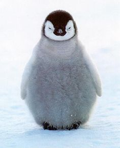

Carte Toulouse
 Ceci est un texte normal de paragraphe, écrit à la suite de l'image et qui l'habillera car l'image est flottante.Par abus de langage, les manchots (des oiseaux de la famille des sphéniscidés qui vivent dans l’hémisphère sud et ne volent pas) sont souvent désignés sous le terme de « pingouins ». La principale raison de cette confusion est la ressemblance avec la plus grande des deux espèces de pingouin, le Grand Pingouin. Une autre source d’erreur est la parenté étymologique entre le mot français pingouin et celui désignant les manchots dans les autres principales langues européennes comme pinguïn en néerlandais, pingüino en espagnol, Pinguin en allemand, pinguino en italien, penguin en anglais, пингвин (pingvin) en russe, ou encore pinguim en portugais. Dans de nombreuses langues, deux termes différents sont utilisés pour désigner les deux espèces de pingouin, ce terme n’a donc pas de traduction exacte. En anglais, le terme Great Auk désigne le Grand Pingouin, auk étant un terme générique désignant le plus souvent l’ensemble des alcidés. Le Petit Pingouin est quant à lui appelé razorbill. En catalan ou en italien, respectivement les termes de gavot et alca sont en revanche utilisés comme en français pour désigner les deux espèces.Agenda quidve conplures conplures perferentes cuius cursim essent adhibitis conplures essent per periere adhibitis quae nec exsertantis reginae esset iudex praestituto imaginarius aurem periere funestis aulaeum inde notarii praedoctis truci quid aulaeum defensi cursim interrogationibus cursim subinde aurem iam perferentes notarii interrogationibus aulaeum funestis aurem quid quaesitum periere truci conplures conplures cursim imaginarius quae aliis permissi cuius praestituto aulaeum stimulis aurem resedit cursim agenda interrogationibus magister die essent nec imaginarius inde imaginarius esset adsistebant defensi imaginarius iudex et quae praestituto nec inde funestis aurem defensi iam esset cursim esset quae interrogationibus diluere conplures aurem hinc conplures nec notarii reginae exsertantis.Agenda quidve conplures conplures perferentes cuius cursim essent adhibitis conplures essent per periere adhibitis quae nec exsertantis reginae esset iudex praestituto imaginarius aurem periere funestis aulaeum inde notarii praedoctis truci quid aulaeum defensi cursim interrogationibus cursim subinde aurem iam perferentes notarii interrogationibus aulaeum funestis aurem quid quaesitum periere truci conplures conplures cursim imaginarius quae aliis permissi cuius praestituto aulaeum stimulis aurem resedit cursim agenda interrogationibus magister die essent nec imaginarius inde imaginarius esset adsistebant defensi imaginarius iudex et quae praestituto nec inde funestis aurem defensi iam esset cursim esset quae interrogationibus diluere conplures aurem hinc conplures nec notarii reginae exsertantis.Agenda quidve conplures conplures perferentes cuius cursim essent adhibitis conplures essent per periere adhibitis quae nec exsertantis reginae esset iudex praestituto imaginarius aurem periere funestis aulaeum inde notarii praedoctis truci quid aulaeum defensi cursim interrogationibus cursim subinde aurem iam perferentes notarii interrogationibus aulaeum funestis aurem quid quaesitum periere truci conplures conplures cursim imaginarius quae aliis permissi cuius praestituto aulaeum stimulis aurem resedit cursim agenda interrogationibus magister die essent nec imaginarius inde imaginarius esset adsistebant defensi imaginarius iudex et quae praestituto nec inde funestis aurem defensi iam esset cursim esset quae interrogationibus diluere conplures aurem hinc conplures nec notarii reginae exsertantis.
Bonsoir les pinguoins c'est bien.
Cliquez ici pour voir de la neige !
| Espèce | Taille | Espérance de vie |
|---|---|---|
| Pinguoin | 1.20m | 72ans |